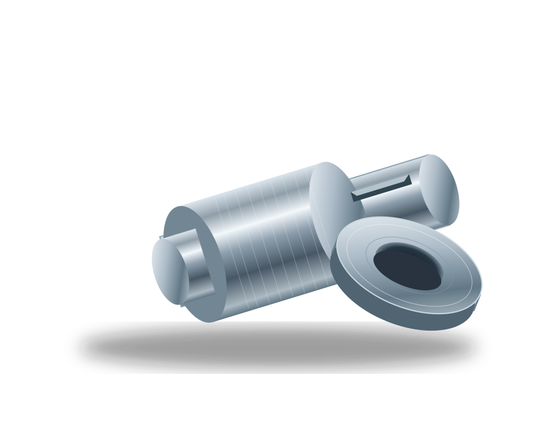
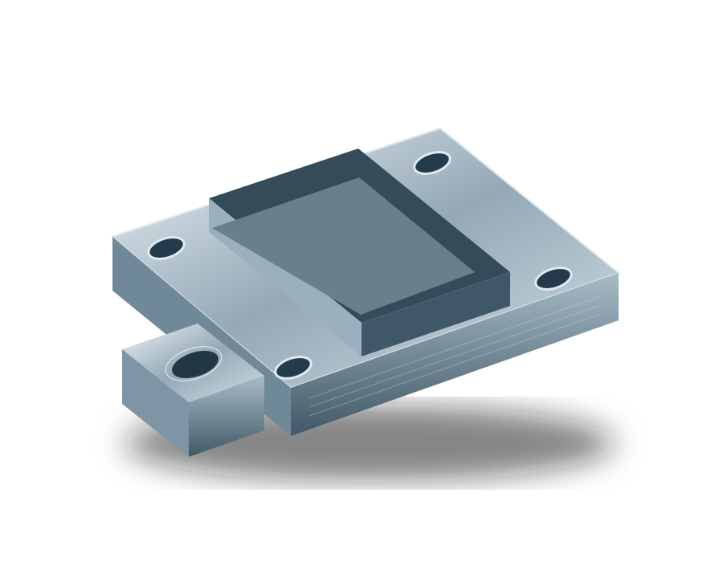

01 精密切削部品
削る、穴をあける、仕上げる。素材の特性に合わせた加工で、装置の動きを支える部品をカタチにします。
製造業デザインサンプル（架空）
写真は製造現場のイメージです。
一つの部品から
素材と向き合う
精度を、積み重ねる。
試作から、その先へ。
現場に息づく技術
ひとつずつ、確かに。
未来をつくる手。
KASANE'S SPIRIT
小さな違いに、まっすぐ向き合う。
ものづくりの可能性は、
小さな部品の中にある。
図面の向こうにある使い方まで考え、素材と技術をつないでいく。ミナト精機は、一つひとつの加工から、次のものづくりを支えます。
素材の持ち味を引き出し、
求められるカタチへ。


削る、穴をあける、仕上げる。素材の特性に合わせた加工で、装置の動きを支える部品をカタチにします。
部品同士のつながりまで考えたものづくり。加工から組み合わせまで、使う場面に合わせて丁寧に整えます。
図面を読み解くところから、最後の仕上がりを確かめるところまで。
工程の一つひとつに目を配り、使う人にとっての確かさをつくる。それが、私たちの考える品質です。